OS
Operating system
يربط العتاد Hardware بالبرامج Software.
مفاهيم وآثار استخدام العتاد والبرمجيات والعلاقات بينهما في أنظمة IT الكبيرة والصغيرة، وأثرها على المؤسسات وأصحاب المصلحة.
يربط العتاد Hardware بالبرامج Software.
يصون النظام ويحسّن أداءه.
ينجز مهمة المستخدم النهائي.
الأساس الذي يمكّن البرامج المثبتة من العمل — واجهة بين Hardware و Software. أمثلة: Windows، macOS، iOS، Android، ChromeOS. واجهات رسومية Graphical. تاريخيًا: DOS.
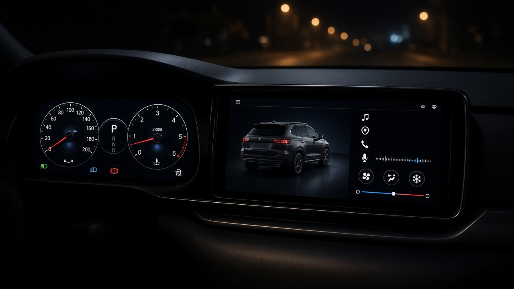
Real time (RTOS)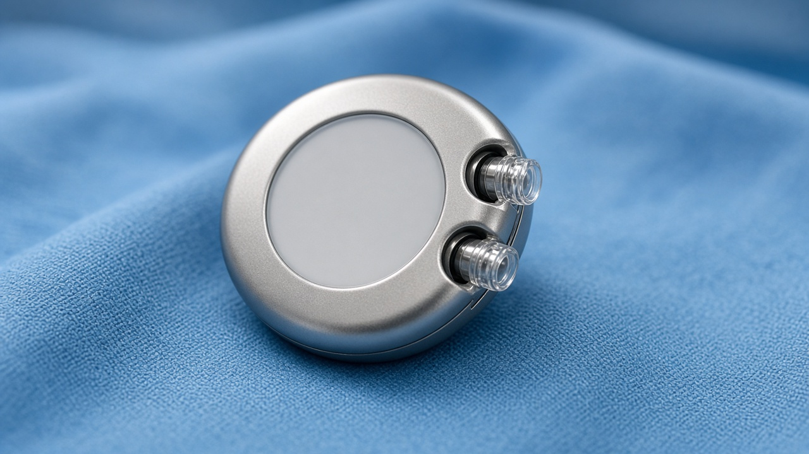
Embedded · medical deviceجهاز يتحكم بآلة، أو يجب أن يستجيب فورًا بلا تأخير ملحوظ.
جهاز بسيط رخيص ووظيفة واحدة واضحة — لا حاجة لتطبيقات متزامنة.
أفراد وشركات على حواسيب شخصية وهواتف: أكثر من عمل في آن.
تعاون عبر خادم أو سحابة، أو موارد مشتركة لكثير من الموظفين.
الوصول لموارد الشبكة: remote printing، إدارة المستخدمين، file backup.
فحوصات مستمرة للهجمات؛ جمع بيانات عن صحة النظام لمكافحة cyber attacks.
توزيع الذاكرة بكفاءة. الأنظمة multi-user تعمل غالبًا من servers.
حصص صغيرة من زمن المعالج بالتناوب — يبدو متزامنًا.
تربط الجهاز الرقمي بالطرفيات: printers، keyboards، screens.
الذاكرة وقوة المعالجة محدودة — كثرة التطبيقات تبطئ الأداء.
نظام التشغيل يعطي كل process حصة صغيرة من processor time. السرعة تخدع العين فتبدو المهام متزامنة.
Antivirus في الخلفية + متصفح + مستند + موسيقى = multitasking بالتناوب، لا بمعالجات لا نهائية.
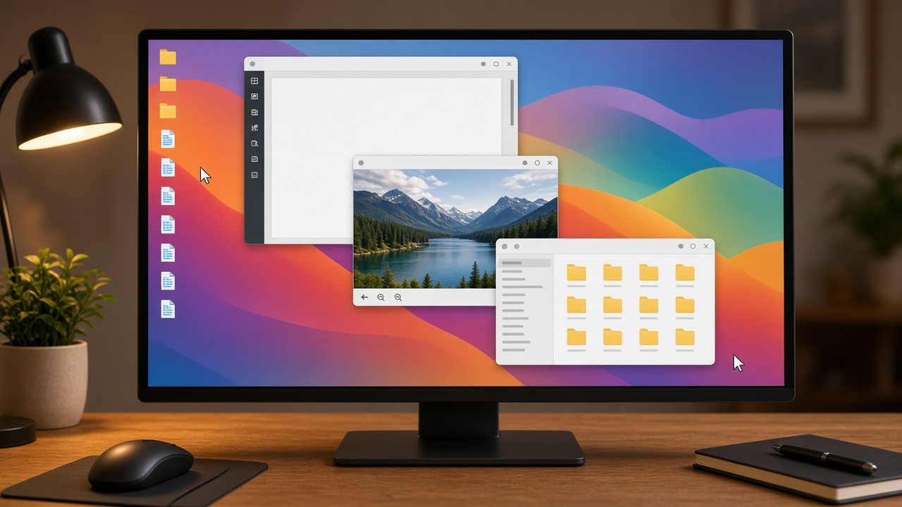
Graphical (GUI)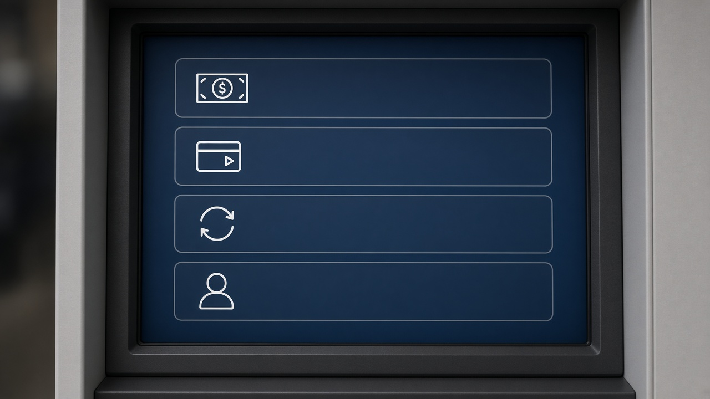
Menu-basedنوافذ وأيقونات وقوائم ومؤشر. سهلة بلا برمجة. تحتاج ذاكرة وطاقة أكبر. توسّع إمكانية الوصول accessibility.
أوامر نصية. مرونة أعلى وأجهزة بمواصفات أقل. تحتاج معرفة commands. مثال: إعداد router عبر terminal.
وظائف عبر قائمة. ذاكرة أقل من GUI. قد تقدّم خيارات إضافية لكن تحتاج معرفة أين الوظيفة.
تكييف اللون وحجم الخط والموضع — مهم لضعف البصر واحتياجات خاصة.
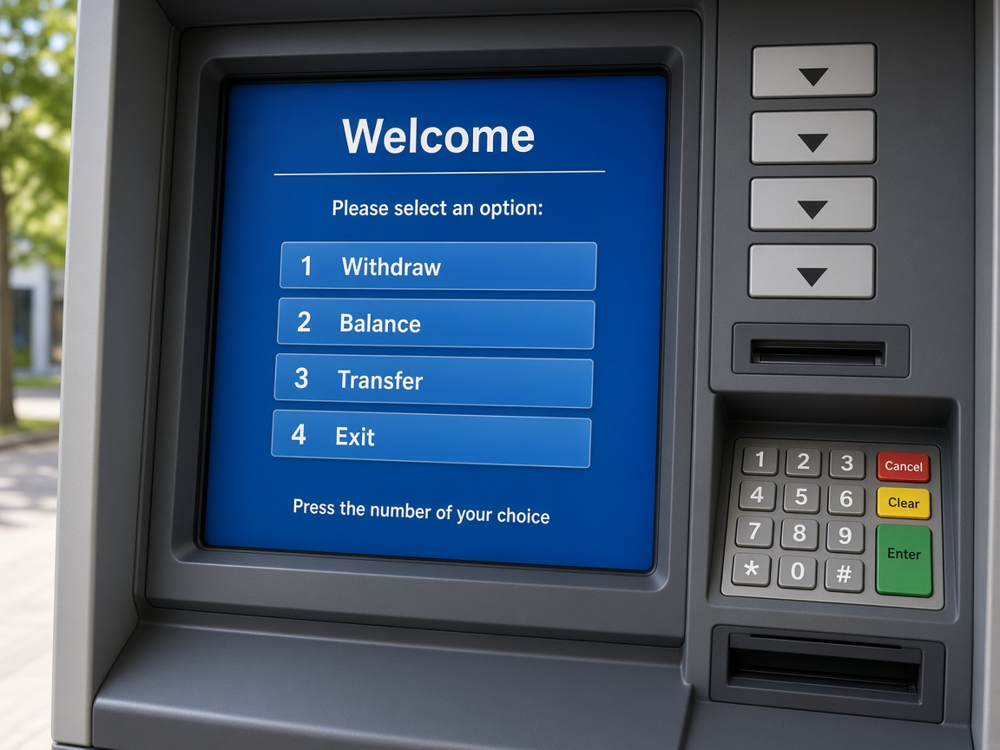
ATM · صراف آلي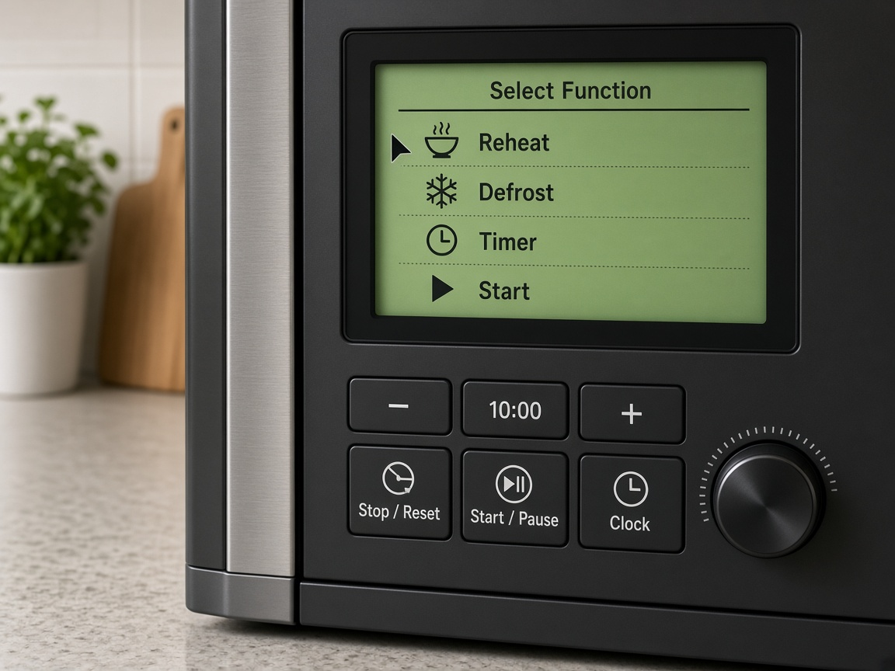
Microwave · ميكروويف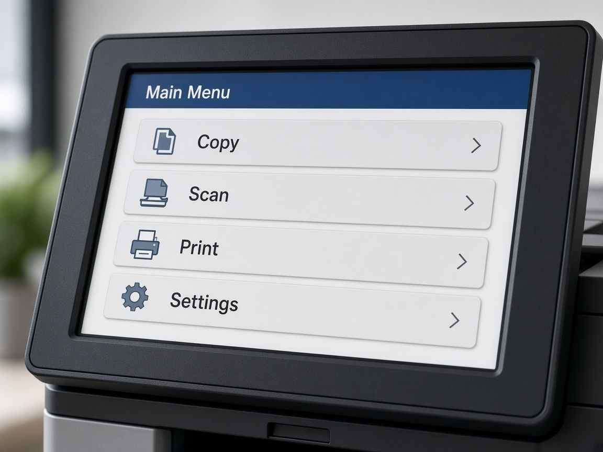
Printer · طابعة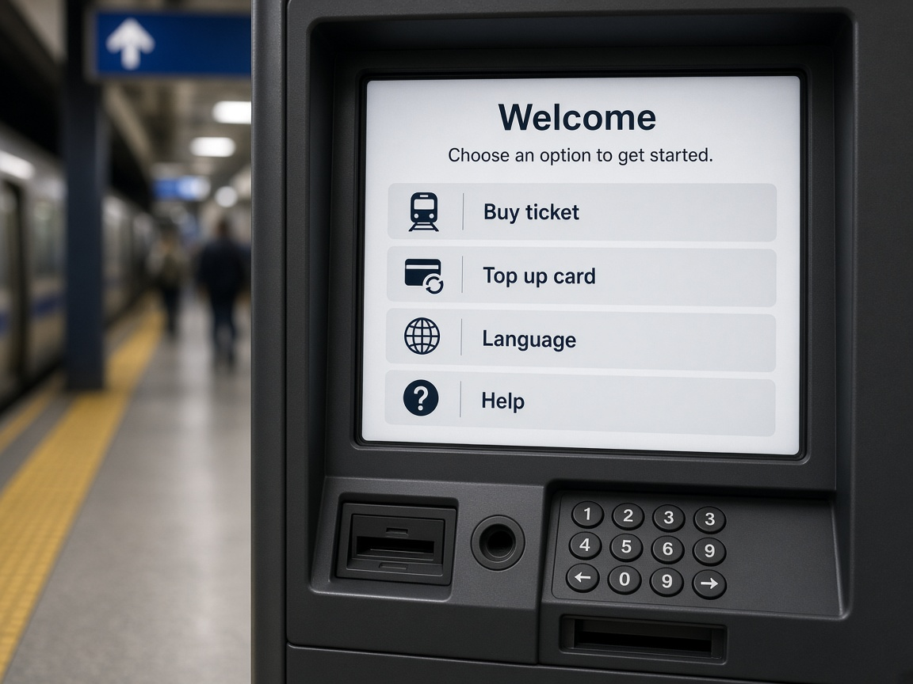
Ticket machine · آلة تذاكر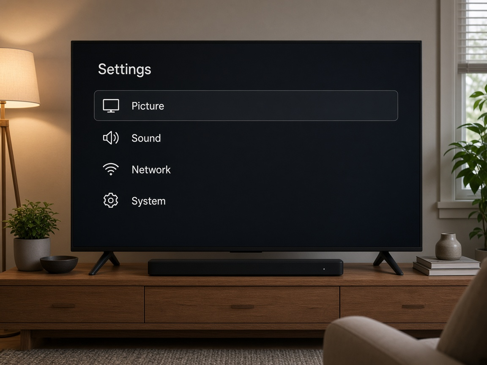
TV menu · قائمة التلفازمستخدم جديد، إدارة يومية، ترفيه، سهولة. Adapted لدعم accessibility.
Software developer، data engineer، IT technician — شبكات وأمان. تحكم أدق.
أثر الواجهة على الأداء: GUI تزيد المتطلبات على storage والأداء مقارنةً بخيارات أخف مثل command line أو menu-based.
طالما عندنا واجهة رسومية (GUI) على الكمبيوتر…
ليش لسا في Command line (CLI)؟
ناقش مع زميلك دقيقة واحدة قبل ما نكشف الجواب.
كثير أشياء سهلة بالواجهة الرسومية لها مثيل في CMD — بس CLI مش بديل يومي دائمًا؛ هو أداة سرعة وطوارئ وفهم.
dir · cdipconfigping 8.8.8.8systeminfohostname · whoamiالخلاصة للطالب: GUI للسهولة اليومية · CLI للتحكم السريع، الإنقاذ، وفهم كيف يشتغل الجهاز من الداخل.
افتح cmd (Win + R ← اكتب cmd ← Enter). أوامر آمنة للقراءة فقط — لا تغيّر الشبكة ولا تحذف شيئًا.
ipconfig — اعرف IP جهازكipconfig /all — تفاصيل أكثر (MAC, DNS)getmac — عنوان MAC فقطhostname — اسم الجهازwhoami — اسم المستخدم الحاليping 8.8.8.8 — هل الإنترنت يصل؟ping localhost — اختبر جهازك نفسهnslookup google.com — حوّل الاسم إلى IPtracert google.com — مسار الرحلة (قد يبطئ قليلًا)systeminfo — ملخص عتاد ونظام التشغيلdir — محتويات المجلد الحاليcd Desktop — انتقل لسطح المكتبtree /F — شجرة المجلدات (جرّبها بمجلد صغير)cls — نظّف الشاشةcolor a — نص أخضر كلاسيكيcolor 0b — خلفية سوداء ونص سماويver — إصدار Windowshelp — قائمة الأوامر · help ping لشرح أمرecho Hello class! — اطبع رسالةقاعدة الصف: نستخدم أوامر قراءة واستعلام فقط. ممنوع: حذف ملفات، تغيير إعدادات الشبكة، أو أوامر تؤثر على أجهزة الآخرين.
بث فيديو + تحرير أثقل من جداول ومستندات إدارية بسيطة.
الذاكرة وسرعة المعالجة. برامج خلفية كثيرة تبطئ laptop.
بعض البرامج لا تعمل على كل OS — مثل اختلاف Apple و Android.
كلّما زاد multitasking زاد الضغط على memory و CPU.
تعمل مع نظام التشغيل لمهام روتينية: حماية، صيانة، تحسين.
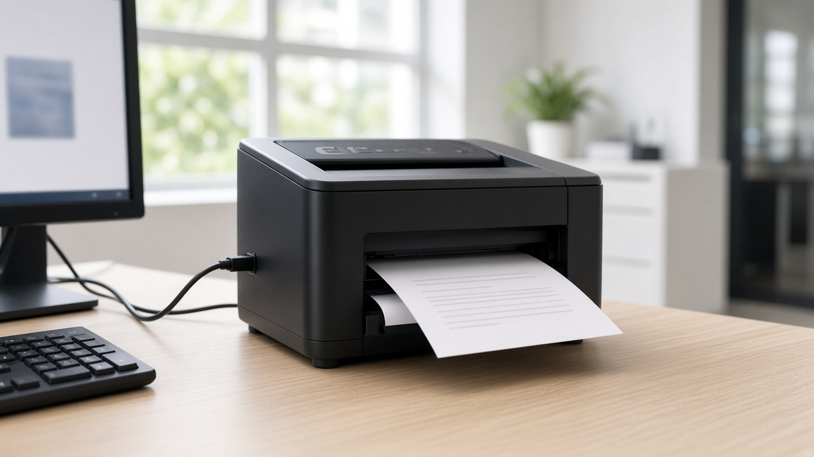
Device drivers · peripheralsDisk defragmenters · Disk partitioners · Encryption software · File managers · Network utilities
حسب الحاجة. تصفح + VoIP قد لا يحتاج printer driver. احذر تعارض عدة antivirus، ونقص memory أو bandwidth.
شراء، مبيعات، مخزون، محاسبة متكاملة.
Digital graphics and animation · DBMS يسترجع ويدير ويعالج بيانات قاعدة البيانات.
سهولة الاستخدام، التوافق interoperability، مهارات الموظفين، الصناعة (مثل Apple في creative industries).
تعاوني، peer review، مجاني، قابل للنسخ والتكييف. خطر تعديل خبيث أو غير خبير — تحقق من المصدر.
ملك الشركة، سري، يُشترى للاستخدام لا لتعديل source code. تصحيحات من المطوّر. قد يكون مكلفًا.
GIF · PNG · JPEG · RAW · SVG
MPEG · AVI
MP3 · WAV
DOC · RTF · XLS · XML · PDF
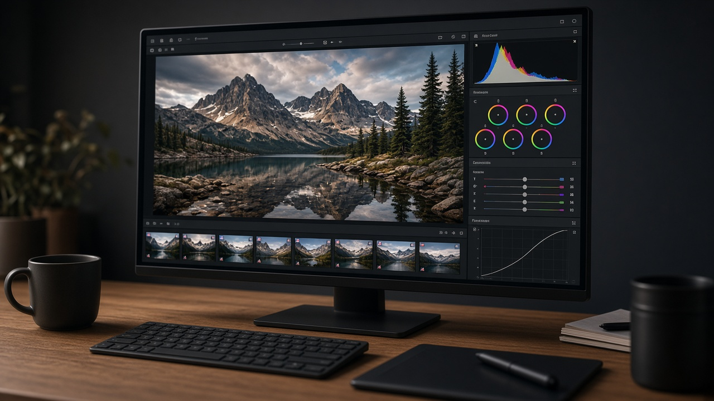
RAW — تعديل بجودة أعلىضغط مع فقدان. مساحة أقل. مناسب للبريد. قد لا يكفي لجودة عالية.
ضغط بلا فقدان. PNG أشيع. GIF للصور المتحركة.
غير مضغوط؛ يحتاج برامج مناسبة للتعديل. حجم أكبر.
RTF أخف للمشاركة عبر إصدارات مختلفة. DOC للتنسيق الغني.
MP3 صوت. ملفات الفيديو أكبر. توافق وأمان الملفات يؤثران على الاستخدام.
تحديث الأنظمة قد يؤخر العمل. عدم التوافق يعيق العملاء والموردين والموظفين. الانتقال يحتاج تدريبًا.
20 صورة. اختر المصطلح الإنجليزي من مواصفات A4، ثم اقرأ السبب.
Run hardware · Ease use · Maintain · Do the job · Share the right file format